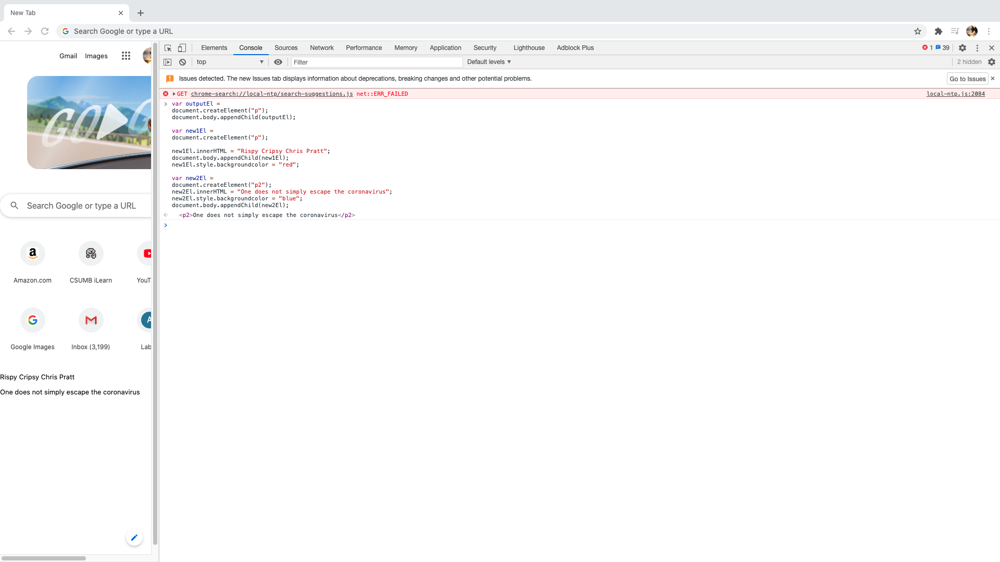
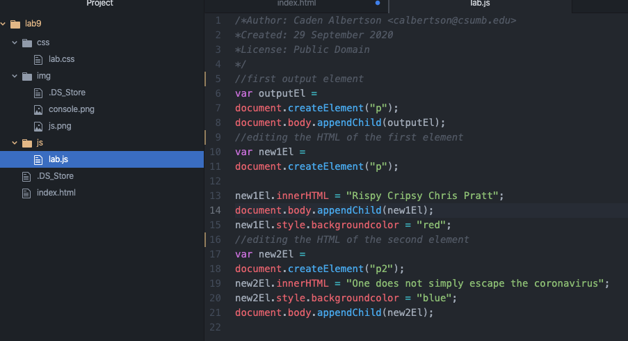

Lab 8: Anon Functions and Callbacks
Script Output
We are making DOM elements and variables and editing those elements and varibles with new js commands.
Challenges
I'm a bit ill at the moment so it's a little challenging to stay focused and alert while working on this. Figuring out what to do for a little bit was also a challenge but my brain started to slowly start speaking javascript language.
Results
An index with new commands in javascript including new DOM elements, assigning those elements to variables, and editing the HTML in those variables using javascript.
Below is the first javascript task I coded in the console in the inspect tab.
This is the next step we coded, its the same coding as in the console, but its written out in Atom.
